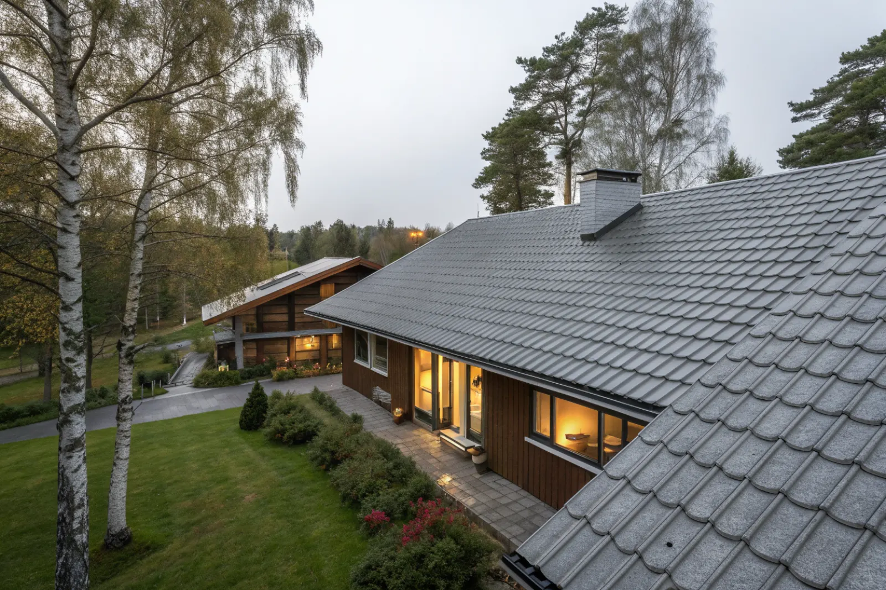

Takbyte i Upplands Väsby
Byte av tegel-, betong- och plåttak.
Takbyte i Upplands Väsby →Upplands Väsby norr om Stockholm har stora villa- och radhusområden från 1960–80-talet. Vi är takläggare i Upplands Väsby för villor och radhus i bland annat Bollstanäs, Vilunda, Runby, Fresta och Smedby.
Väsby växte kraftigt från 1960-talet, när stora delar av dagens villa- och radhusområden byggdes. Bollstanäs, Vilunda och Runby har villor och radhus från den här tiden, ofta med betongpannor eller plåt på relativt enkla sadeltak.
Det betyder att många tak i kommunen är ungefär jämngamla och har hamnat i samma läge: originalunderlaget har tjänat ut, pannorna har förlorat sin yta och takfotsplåtar och hängrännor behöver bytas.
I Fresta och Smedby finns äldre gårdsbebyggelse och villor, och längs Edssjön och Fysingen ligger hus i mer öppna, vindutsatta lägen.
Oavsett om du behöver ett komplett takbyte eller en riktad renovering ger vi en tydlig bedömning och offert. Vi arbetar även i grannområden – se alla områden vi arbetar i.

Typiskt för hus från 1960–80-talet är betongpannor med sliten yta, underlagspapp som spricker vid takfoten och läkt som börjat ruttna där vatten letat sig in. Takfönster och genomföringar från senare ombyggnader är ofta dåligt inplåtade.
Många villor har kvar hängrännor och stuprör från när huset byggdes. Rostiga rännkrokar och läckande skarvar gör att vatten rinner längs fasaden och ner vid grunden – därför byter vi ofta avvattningen i samma projekt som taket.
Bygglov hanteras av Upplands Väsby kommun. Samma material och kulör kräver normalt inget lov. I områden där husen byggts med enhetlig gestaltning kan detaljplanen reglera tak och kulör – kontrollera med kommunen innan ni byter material.
Besikta gärna taket på våren eller hösten, så att ett eventuellt byte kan planeras till en period med torrt väder och god framförhållning.
Byte av tegel-, betong- och plåttak.
Takbyte i Upplands Väsby →Riktade åtgärder som förlänger takets liv.
Takrenovering i Upplands Väsby →Bedömning av skick inför beslut.
Takbesiktning i Upplands Väsby →Nytt ytskydd på plåttak.
Takmålning i Upplands Väsby →Skonsam tvätt och mossbehandling.
Taktvätt i Upplands Väsby →Nytt plåttak och plåtarbeten.
Plåttak i Upplands Väsby →Vi utgår från Bromma (Mariehäll) och når Upplands Väsby via E4 norrut. Vi kommer ut på besiktning och följer projektet tills taket är klart.
Läs mer om tak på villa eller jämför takbyte och takrenovering innan du bestämmer dig.
Vi arbetar även i Sollentuna.
Takläggare i Sollentuna →Vi arbetar även i Vallentuna.
Takläggare i Vallentuna →Vi arbetar även i Täby.
Takläggare i Täby →Vi arbetar även i Järfälla.
Takläggare i Järfälla →